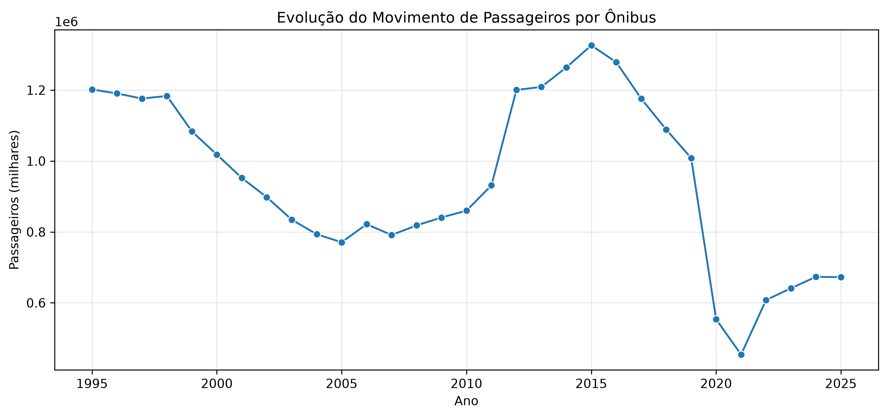
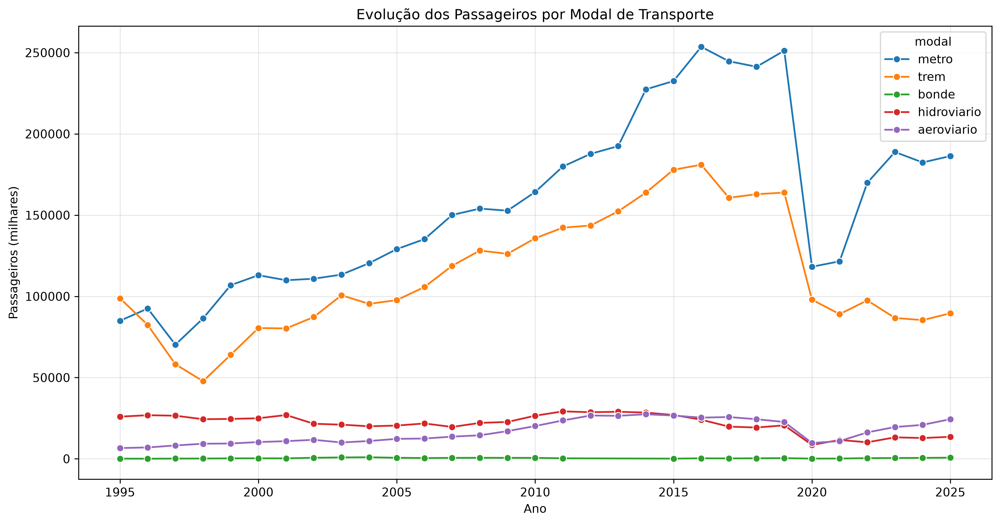
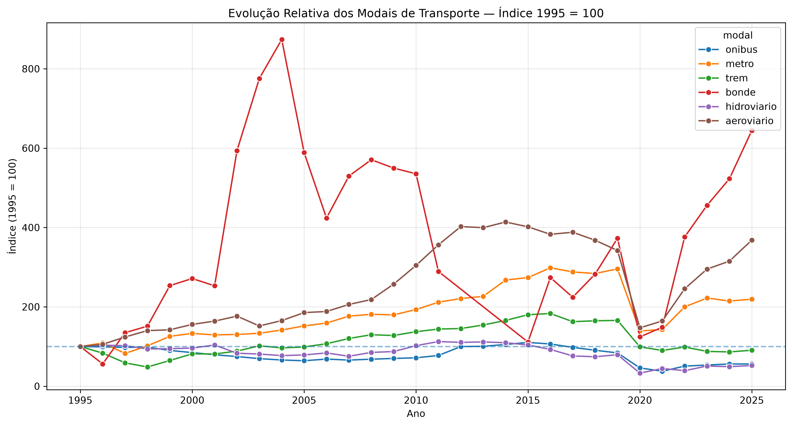
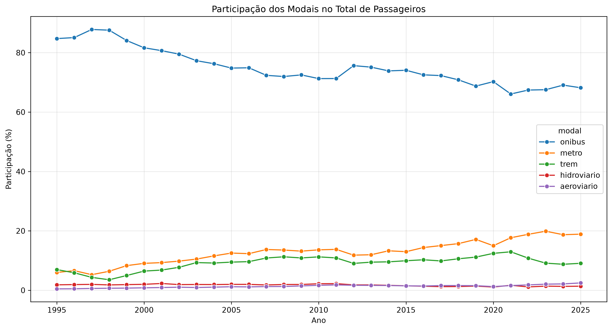
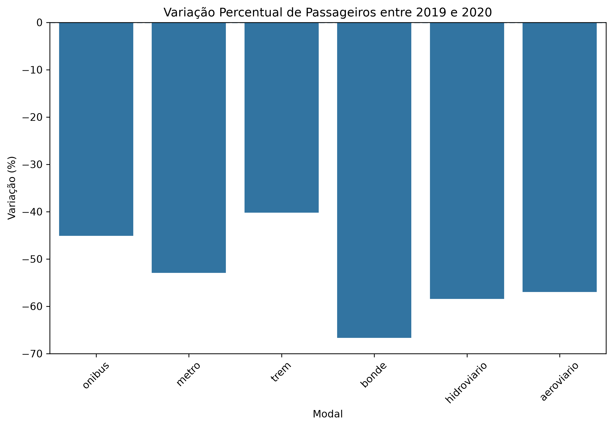
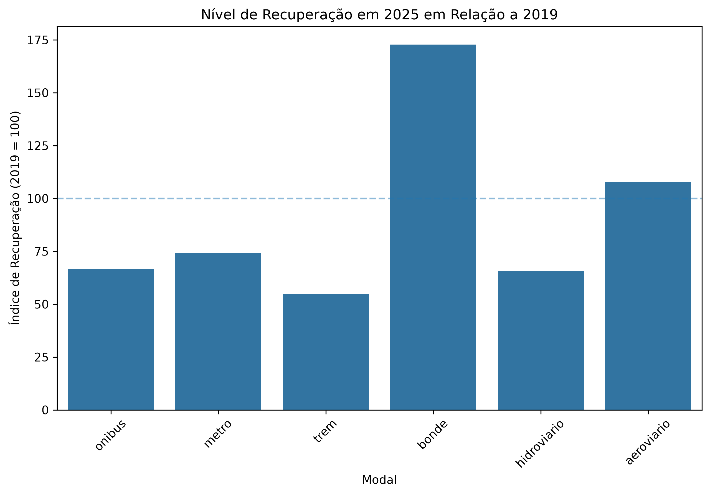
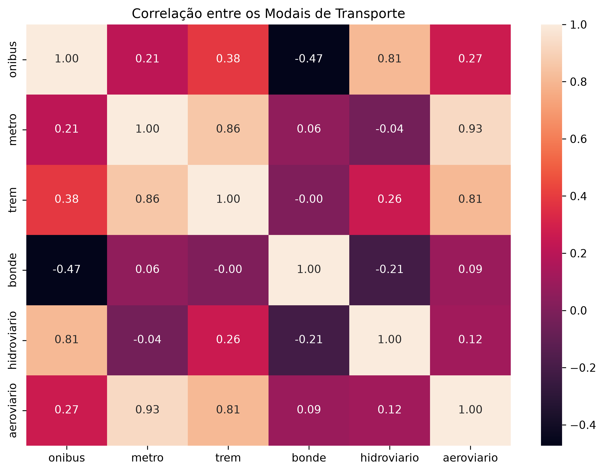
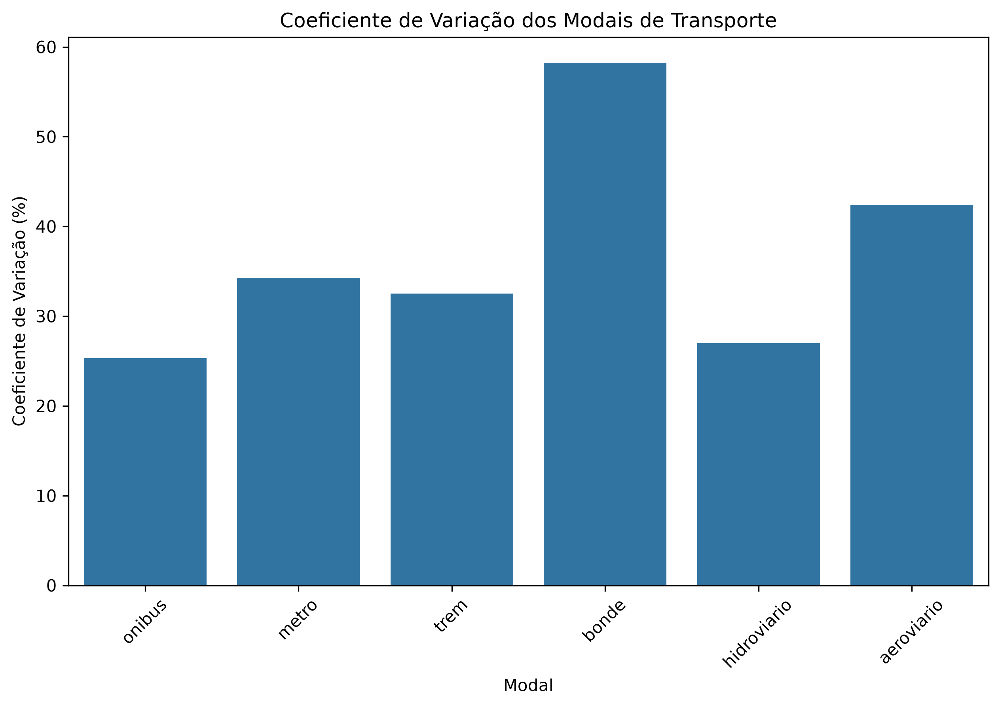

Evolução do Transporte de Passageiros no Município do Rio de Janeiro entre 1995 e 2025
Isabelle Pinheiro Lovo
Laura Ribeiro Mota
Centro Universitário La Salle do Rio de Janeiro — Unilasalle-RJ
Bacharelado em Sistemas de Informação
Disciplina: Linguagens de Programação
Docente: Alexandre Neves Louzada
Resumo
Este estudo analisa a evolução do movimento de passageiros em diferentes modais de transporte no Município do Rio de Janeiro entre 1995 e 2025, utilizando dados públicos disponibilizados pelo Data.Rio.
A análise contempla os transportes por ônibus, metrô, trem, bonde, hidroviário e aeroviário. Os dados foram submetidos a um pipeline de extração, transformação e carregamento desenvolvido em Python, incluindo tratamento de cabeçalhos, padronização de variáveis, conversão de tipos e tratamento de valores ausentes. Para o processamento e a análise dos dados, foram utilizadas as bibliotecas Pandas e NumPy, enquanto Matplotlib e Seaborn foram empregadas na construção das visualizações estatísticas. A biblioteca Plotly foi utilizada para a criação de visualizações interativas. Além disso, OpenPyXL foi utilizada para a leitura da planilha original em Excel e PyArrow para a persistência dos dados processados em formato Parquet.
Foram aplicadas técnicas de estatística descritiva, análise temporal, participação relativa, correlação e medidas de dispersão. Os resultados evidenciam mudanças importantes na composição do transporte de passageiros, incluindo redução da participação relativa do transporte por ônibus, crescimento do metrô e uma forte ruptura nas séries em 2020, seguida por diferentes padrões de recuperação.
Palavras-chave: mobilidade urbana; transporte público; passageiros; análise de dados; Rio de Janeiro; Python.
1. Introdução
A mobilidade urbana exerce papel fundamental no funcionamento das grandes cidades, influenciando o acesso da população ao trabalho, à educação, aos serviços e às atividades econômicas. A análise histórica da utilização dos diferentes meios de transporte permite identificar mudanças nos padrões de deslocamento e compreender transformações na estrutura da mobilidade urbana.
Neste trabalho, são analisados dados sobre o movimento de passageiros nos principais modais de transporte do Município do Rio de Janeiro entre 1995 e 2025. A base utilizada é disponibilizada pelo Data.Rio e contempla ônibus, metrô, trem, bonde, transporte hidroviário e transporte aeroviário.
A investigação foi estruturada a partir de três perguntas de pesquisa:
2. Metodologia e Pipeline de Dados
2.1 Fonte dos dados
A base de dados utilizada neste estudo foi obtida no portal Data.Rio, plataforma de dados abertos da Prefeitura da Cidade do Rio de Janeiro.
O conjunto de dados apresenta informações anuais sobre o movimento de passageiros em diferentes modais de transporte no Município do Rio de Janeiro, abrangendo o período de 1995 a 2025.
Os modais contemplados são: ônibus, metrô, trem, bonde, transporte hidroviário e transporte aeroviário. Os valores disponibilizados na fonte original estão expressos em milhares de passageiros.
2.2 Estrutura original da base
O arquivo original foi disponibilizado em formato de planilha eletrônica e apresentava uma estrutura não diretamente tabular, contendo títulos, cabeçalhos distribuídos em múltiplas linhas, células mescladas, notas explicativas e informações de fonte ao final da planilha.
Além disso, foram identificados valores representados por
reticências (...) na variável referente ao bonde,
indicando ausência de dado numérico para determinados anos.
2.3 Pipeline de ETL
Para garantir a reprodutibilidade do processo, foi desenvolvido
um pipeline de ETL em Python, localizado no arquivo
src/etl.py.
O processo foi dividido em três etapas principais:
-
Extração: leitura da planilha original
armazenada em
data/raw/. - Transformação: remoção de linhas que não representavam observações, padronização dos nomes das variáveis, conversão dos tipos de dados e tratamento dos valores ausentes.
-
Carregamento: exportação da base tratada
para formatos abertos e reutilizáveis na pasta
data/processed/.
2.4 Tratamento dos dados
Inicialmente, foram removidas as linhas de títulos e cabeçalhos
que antecediam a tabela principal. Em seguida, as variáveis foram
padronizadas com nomes simples e sem caracteres especiais:
ano, onibus, metro,
trem, bonde,
hidroviario e aeroviario.
A coluna ano foi convertida para o tipo inteiro,
enquanto as variáveis referentes ao número de passageiros foram
convertidas para valores numéricos de ponto flutuante.
Os valores representados por ... na variável
bonde foram convertidos para valores ausentes
(NaN). Esses valores não foram substituídos por
zero ou por estimativas, pois a fonte original indica ausência
de informação e não inexistência de passageiros.
Exemplo do processamento
df = pd.read_excel(
caminho_arquivo,
skiprows=6
)
df.columns = [
"ano",
"onibus",
"metro",
"trem",
"bonde",
"hidroviario",
"aeroviario"
]
df["ano"] = pd.to_numeric(
df["ano"],
errors="coerce"
)
df = df.dropna(
subset=["ano"]
)
Após o tratamento, a base resultante passou a conter 31 observações, correspondentes aos anos de 1995 a 2025, e sete variáveis.
2.5 Persistência dos dados processados
A versão tratada da base foi armazenada em dois formatos: CSV e Parquet.
O formato CSV facilita a leitura e a interoperabilidade entre diferentes ferramentas, enquanto o formato Parquet preserva de forma eficiente os tipos de dados e é adequado para processos analíticos reproduzíveis.
3. Resultados e Discussão
3.1 Evolução do volume de passageiros
A primeira pergunta de pesquisa buscou compreender como evoluiu o volume de passageiros nos diferentes modais de transporte do Município do Rio de Janeiro entre 1995 e 2025.
Em termos absolutos, o transporte por ônibus apresentou os maiores volumes durante todo o período analisado. A série demonstra redução entre o final da década de 1990 e meados dos anos 2000, seguida por recuperação ao longo da década seguinte.
O maior volume de passageiros transportados por ônibus foi registrado em 2015, enquanto o menor valor da série ocorreu em 2021.

Metrô e trem também apresentaram crescimento relevante ao longo de grande parte da série histórica. Ambos atingiram seus maiores volumes em 2016, evidenciando expansão importante da utilização dos sistemas ferroviários até meados da década de 2010.
Os transportes hidroviário e aeroviário operaram em escalas menores, enquanto o bonde apresentou os menores volumes absolutos entre os modais analisados.

Visualização interativa
A visualização abaixo permite explorar a evolução histórica dos diferentes modais de transporte de forma interativa. É possível selecionar ou ocultar modais, ampliar períodos específicos e consultar os valores de cada ano.
3.2 Evolução relativa dos modais
Como os modais apresentam escalas muito diferentes, também foi calculado um índice de evolução relativa considerando o ano de 1995 como base igual a 100.
Essa transformação permite comparar o crescimento ou a redução proporcional de cada modal em relação ao seu próprio nível inicial, independentemente do volume absoluto transportado.

O bonde apresentou as maiores variações relativas ao longo da série. Esse resultado deve ser interpretado considerando seu baixo volume absoluto, pois pequenas alterações numéricas podem representar grandes variações percentuais.
O metrô e o transporte aeroviário também apresentaram crescimento significativo em relação aos níveis de 1995, enquanto o transporte por ônibus apresentou períodos prolongados abaixo do seu nível inicial.
3.3 Participação relativa dos modais
A segunda pergunta de pesquisa analisou quais modais ganharam ou perderam participação relativa ao longo do período.
Para garantir consistência temporal, o cálculo de participação utilizou os modais com séries completas: ônibus, metrô, trem, transporte hidroviário e transporte aeroviário. O bonde foi excluído desse cálculo devido à presença de valores ausentes em determinados anos.

O ônibus permaneceu como o modal dominante durante todo o período, porém sua participação relativa apresentou redução gradual ao longo das décadas.
Em sentido contrário, o metrô ampliou sua participação no sistema, tornando-se progressivamente mais relevante na composição do transporte de passageiros.
O trem também apresentou ganho de participação em determinados períodos, embora tenha registrado redução nos anos mais recentes.
3.4 Ruptura observada em 2020
A terceira pergunta de pesquisa investigou o impacto da forte ruptura observada em 2020 e a recuperação posterior dos diferentes modais.
Entre 2019 e 2020, todos os modais apresentaram redução no número de passageiros.
A maior queda proporcional ocorreu no bonde, com redução de aproximadamente 66,7%. O transporte hidroviário apresentou queda de aproximadamente 58,4%, enquanto o aeroviário registrou redução próxima de 57,0%.
O metrô apresentou redução de aproximadamente 52,9%, o ônibus de 45,1% e o trem de 40,2%.

3.5 Recuperação até 2025
A recuperação dos diferentes modais foi avaliada utilizando 2019 como referência igual a 100.
Em 2025, o transporte aeroviário já havia ultrapassado o nível registrado em 2019, atingindo aproximadamente 107,7% do valor anterior à ruptura.
O bonde também apresentou valor superior ao nível de 2019, alcançando aproximadamente 172,8%. Entretanto, esse resultado deve ser interpretado com cautela devido ao baixo volume absoluto desse modal.
Os demais modais ainda permaneciam abaixo do nível de 2019. O metrô atingiu aproximadamente 74,2%, o ônibus 66,7%, o transporte hidroviário 65,7% e o trem 54,7%.

3.6 Correlação entre os modais
A matriz de correlação foi utilizada para investigar a associação linear entre as séries históricas dos diferentes modais.
A maior correlação positiva foi observada entre metrô e transporte aeroviário, com aproximadamente 0,93. Também foram identificadas correlações elevadas entre metrô e trem, aproximadamente 0,86, e entre trem e transporte aeroviário, aproximadamente 0,81.
O transporte por ônibus apresentou correlação positiva elevada com o transporte hidroviário, também próxima de 0,81.
O bonde apresentou comportamento distinto, incluindo correlação negativa moderada com o transporte por ônibus, de aproximadamente -0,47.

As correlações identificadas representam associações estatísticas entre as séries e não devem ser interpretadas como relações de causa e efeito.
3.7 Variabilidade dos modais
Para comparar a estabilidade das séries independentemente das diferenças de escala, foi calculado o coeficiente de variação.
O transporte por ônibus apresentou o menor coeficiente de variação, aproximadamente 25,3%, indicando maior estabilidade relativa ao longo do período analisado.
O transporte hidroviário apresentou coeficiente próximo de 27,0%, enquanto trem e metrô apresentaram aproximadamente 32,5% e 34,3%, respectivamente.
O transporte aeroviário apresentou maior variabilidade, aproximadamente 42,4%, enquanto o bonde apresentou o maior coeficiente de variação, aproximadamente 58,2%.

4. Conclusão
Este estudo analisou a evolução do movimento de passageiros nos principais modais de transporte do Município do Rio de Janeiro entre 1995 e 2025, utilizando dados públicos disponibilizados pelo Data.Rio.
Os resultados mostraram que o transporte por ônibus permaneceu como o modal de maior volume absoluto durante todo o período analisado. Entretanto, sua participação relativa apresentou redução ao longo das três décadas, enquanto o metrô ampliou sua importância na composição do transporte de passageiros.
A análise temporal também evidenciou uma ruptura acentuada em 2020, observada em todos os modais. A intensidade dessa redução, entretanto, não foi uniforme. Da mesma forma, o processo de recuperação ocorreu em ritmos diferentes.
Em 2025, o transporte aeroviário e o bonde já apresentavam valores superiores aos registrados em 2019, enquanto ônibus, metrô, trem e transporte hidroviário ainda permaneciam abaixo dos respectivos níveis anteriores à ruptura.
As análises de correlação e dispersão complementaram a avaliação temporal. Foram identificadas associações positivas elevadas entre algumas séries, especialmente entre metrô e transporte aeroviário, além de diferenças relevantes no grau de variabilidade dos modais.
Como limitações do estudo, destaca-se a presença de valores ausentes na série histórica do bonde e a utilização de dados agregados anualmente. Essa granularidade impossibilita análises mais detalhadas relacionadas à sazonalidade, distribuição espacial dos deslocamentos ou perfil dos passageiros.
Como trabalhos futuros, a análise poderá ser ampliada com a incorporação de variáveis como população, tarifas, extensão das redes de transporte, indicadores econômicos e outros fatores históricos ou urbanos que possam contribuir para a compreensão das transformações observadas.
5. Disponibilidade dos Dados e Declaração FAIR
Os dados utilizados neste trabalho são provenientes do Data.Rio, portal de dados públicos da Prefeitura da Cidade do Rio de Janeiro.
O projeto foi estruturado considerando os princípios FAIR (Findable, Accessible, Interoperable e Reusable), buscando facilitar a localização, o acesso, a compreensão e a reutilização dos dados e códigos produzidos.
5.1 Findable — Localizável
O repositório apresenta documentação no arquivo
README.md, identificação do projeto, autoria,
palavras-chave, fonte original dos dados e organização
padronizada dos arquivos.
5.2 Accessible — Acessível
O código-fonte, os dados processados, o notebook de análise e este artigo são disponibilizados por meio de um repositório público no GitHub. O artigo acadêmico é publicado utilizando o GitHub Pages.
5.3 Interoperable — Interoperável
Os dados tratados são disponibilizados nos formatos CSV e
Parquet. Além disso, o arquivo
data/data_dictionary.md apresenta a descrição,
o tipo e a unidade de medida das variáveis utilizadas.
5.4 Reusable — Reutilizável
O projeto apresenta documentação do processo de tratamento dos dados, arquivo de dependências do ambiente Python e licença de uso do código, permitindo que outros usuários reproduzam ou adaptem a análise.
5.5 Reprodução da análise
Após realizar o clone do repositório, o ambiente poderá ser preparado utilizando os seguintes comandos:
git clone https://github.com/LauraRMota/transporte-passageiros-rio
cd transporte-passageiros-rio
python -m venv .venv
pip install -r requirements.txt
python src/etl.py
Após a execução do pipeline de ETL, os dados tratados estarão
disponíveis em data/processed/ e poderão ser
utilizados no notebook
notebooks/analise_exploratoria.ipynb.
6. Referências
DATA.RIO. Movimento de passageiros segundo os transportes rodoviário, ferroviário, hidroviário e aeroviário no Município do Rio de Janeiro entre 1995 e 2025. Prefeitura da Cidade do Rio de Janeiro.
MCKINNEY, Wes. Python for Data Analysis. 3. ed. Sebastopol: O'Reilly Media, 2022.
PANDAS DEVELOPMENT TEAM. pandas documentation. Documentação oficial da biblioteca pandas.
HUNTER, John D. Matplotlib: A 2D Graphics Environment. Computing in Science & Engineering, v. 9, n. 3, p. 90–95, 2007.
WASKOM, Michael L. Seaborn: statistical data visualization. Journal of Open Source Software, v. 6, n. 60, 3021, 2021.